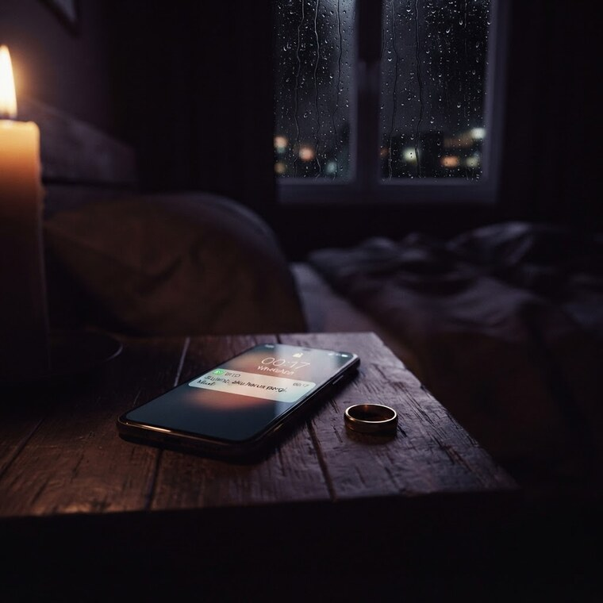
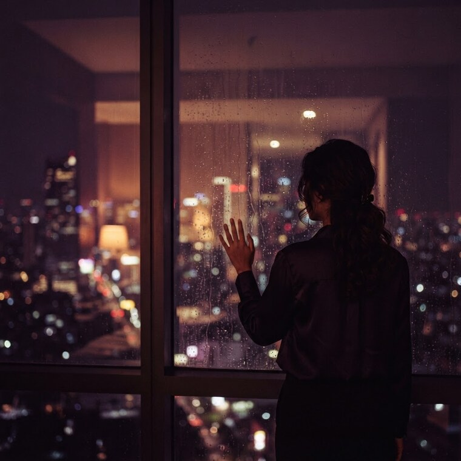
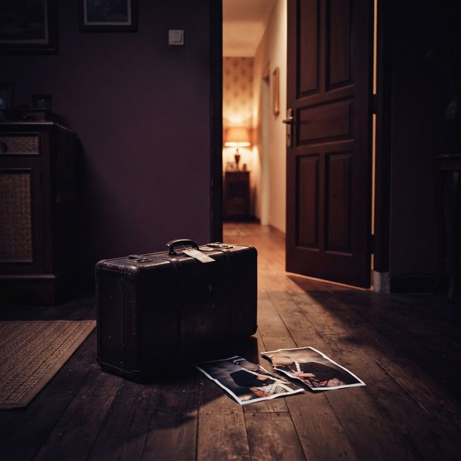

Sebuah pesan masuk dari nomor yang sudah kamu hapus tiga tahun lalu.
“Aku tahu apa yang sebenarnya terjadi malam itu.”
Buka pesannya
→
Abaikan untuk malam ini
→
Pilihanmu bisa kembali jauh setelah kamu melupakannya.
Buka pesannya
Pilihanmu dicatat.
Tapi itu baru keputusan pertama.

Bab 3
Kamu menyembunyikan sebuah surat.

Bab 18
Seseorang mulai mencurigaimu.

Bab 37
Surat itu ditemukan.
Pilihan kecil bisa kembali jauh setelah kamu melupakannya.
Lakoku
Mulai Ceritaku
3 bab pertama gratis · tanpa kartu